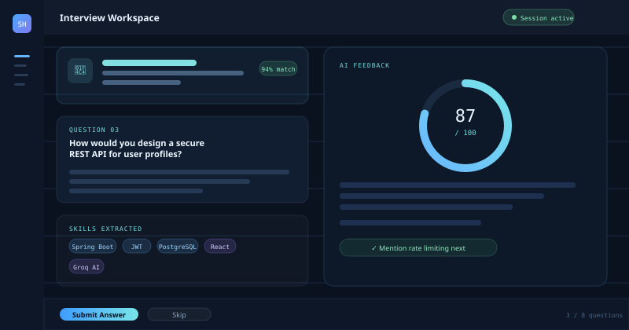
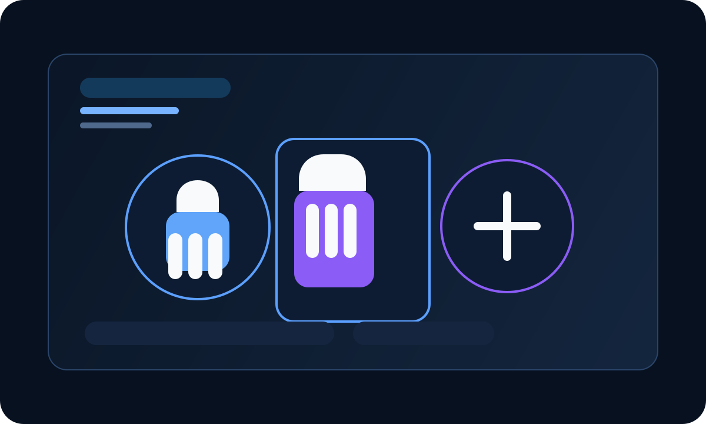
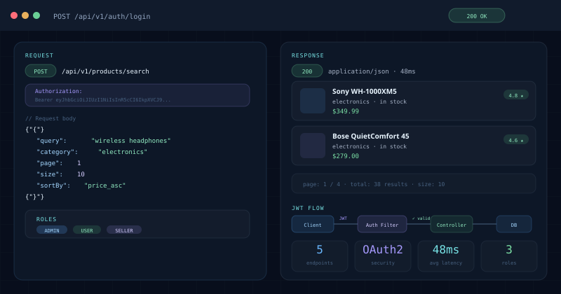

Available for 2027 software engineering internships
Building calm, scalable backend systems.
I am Vishal Sharma, a backend-focused engineer who turns complex product requirements into secure APIs, thoughtful data models, and AI-powered experiences.
 Backend engineer
Backend engineerJava / Spring Boot
2027
B.Tech CSECGPA 7.04
01 / About
I build with the whole system in mind.
Good backend work is more than endpoints. It is the discipline of choosing clear boundaries, designing for failure, protecting data, and making the frontend team's job easier.
Let's work togetherI am a B.Tech Computer Science student focused on backend engineering with Java and Spring Boot. I enjoy breaking ambiguous problems into clean, testable building blocks—from the database schema to the API contract.
B.Tech Computer Science Engineering · Dr. AITD, AKTU · 2023–2027CGPA 7.04
Think in flows
I map data, user intent, and failure paths before implementation.
Build for trust
Security, validation, and clear permissions are part of the product.
Learn in public
AI, system design, and problem solving keep expanding my engineering range.
Improve continuously
I favor useful feedback loops over one-time, fragile solutions.
02 / Toolkit
Right tools. Deliberate choices.
I choose technology for clarity, reliability, and the problem at hand—not novelty alone.
01
Backend
Services designed around robust contracts, clean business logic, and secure access.
02
Frontend
Interfaces that make technical products easy to use.
03
AI & ML
Applied intelligence that solves a visible user problem.
04
Data, Cloud & delivery
Persistent models and practical tools for shipping.
03 / Selected work
Projects with engineering depth.
Each project starts with a real workflow, then earns its complexity through thoughtful implementation.
Featured project AI-powered
SmartHire — AI Resume Driven Interview System
Turns a candidate's resume into a tailored interview practice flow—with contextual questions, secure sessions, and AI-assisted feedback designed to make preparation more actionable.


02Computer vision / Accessibility
Sign Language Detection System
Real-time gesture recognition explored through data preparation, model benchmarking, and accuracy-focused iteration.

03Backend / Security
E-Commerce Backend System
A secure commerce API built around role-aware access, discoverability, and a scalable relational data model.
04 / Engineering approach
System design is how I turn ideas into dependable products.
I am actively deepening my system design practice: making sensible trade-offs, establishing clear service boundaries, and designing for the state a product will reach next.
REST API design
Predictable resources, useful error contracts, and version-ready interfaces.
Authentication & JWT flow
Clear access boundaries and secure state from login through protected endpoints.
Database design
Models that reflect the domain, preserve integrity, and stay easy to query.
Caching & scalability
Knowing where a system can become slow and what to measure first.
Microservices
Service boundaries shaped around ownership, communication, and change.
05 / Experience & community
Learning through real constraints.
Industry simulations and hackathons have sharpened how I communicate, prioritize, and deliver under a deadline.
JPMC
Virtual experience / Forage
JP Morgan Chase Software Engineering Virtual Experience
Practiced backend service delivery in a production-style setting, with a focus on clear API contracts, modular design, and implementation discipline.
HACKATHON
Smart India Hackathon
Top 50 team with hands-on product problem solving under pressure.
BUILD
MLH AI Hackfest
Explored AI-powered product development in a rapid build environment.
06 / Path so far
Curiosity, then momentum.
Every stage has added a new layer: fundamentals, frameworks, production thinking, and now AI-assisted systems.
- 2023
Started Java
Established a foundation in programming, DSA, and core computer science.
- 2024
Spring Boot
Moved from language fundamentals into server-side development and APIs.
- 2025
Backend Projects
Applied secure API design and data modelling in full project builds.
- 2026
AI, System Design & Hackathons
Expanded into AI-powered workflows, engineering trade-offs, and build sprints.
- 2027
Software Engineering Internship
Ready to bring this foundation to an ambitious engineering team.
07 / Recognition
Signals of consistent effort.
National Engineering Challenge
AIR 102 / 2025
Smart India Hackathon
Top 50 / team
Problem solving
300+ / DSA
Competitive programming
Rank 824 / CodeChef
CertificationsContinuing to widen the technical lens.
JP MorganAI for AllGenerative AI Essentials
08 / Problem solving
Practice is where intuition becomes process.
300+ problems have trained me to clarify constraints, select the right abstraction, and keep moving when the first approach is not the best one.
09 / Contact
Let's build something amazing together.
I am looking for an engineering internship where I can contribute to reliable systems, learn from strong teammates, and grow with real product challenges.
Download my resume
Emailsharma2005vishal@gmail.com
LinkedInsharma-vishal-1abc
GitHubsharmaVishal2
Phone+91 82188 37039
Kanpur, Uttar Pradesh · Open to remote roles